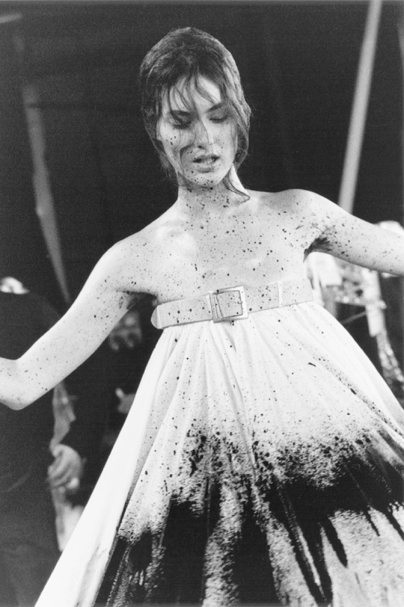

prosthetic legs were part of a wider homage to the tactile design traditions of the Arts & Crafts movement within No.13, apparent in a number of other pieces in a collection rendered from raffia, lace, wet-moulded leather, and wood – most notably, the perforated balsa wood bodice and skirt which fanned out at the back to form a pair of wings. However, it was in applying the Edwardian Arts & Crafts movement’s mantras to the possibilities offered by modern technology to the designer which created one of the most iconic moments of McQueen’s career – No.13’s finale.
With Shalom Harlow wearing a white cotton dress belted under the arms, she positioned herself centre stage on a rotating plinth. As Harlow, a former ballerina, began slowly spinning like music-box doll, two industrial paint sprayers on the sides of the runway suddenly came to life, and began spraying her with black and fluorescent green paint. It had taken over a week to program the robotic cranes and choreograph their movements against that of the model, and the result was nothing short of poetry in motion. A comment on the relationship between man and machine at the turn of the millennium, closer in spirit to a work of performance art than a vehicle of commerce, No.13 was the only runway presentation that brought McQueen to tears.
Photograph by Anne Deniau